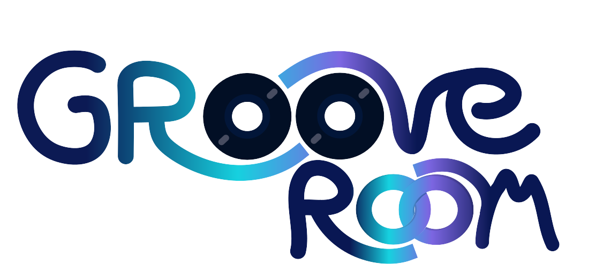
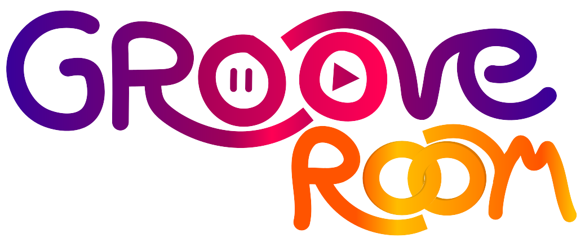

Wat heb ik gedaan
Ik ben begonnen met inspiratie op internet te zoeken en schetsen op papier te maken. Deze schetsen heb ik vervolgens aan de stakeholder laten zien om te weten welke richting ik op moet. Vervolgens heb ik deze schetsen digitaal ontworpen met behulp van Inkscape, waarbij ik meerdere versies van het logo heb gemaakt. Hierop heb ik vervolgens weer feedback gevraagd van de stakeholder en daaruit bleek dat hij alleen de naam wou en geen icon. Uiteindelijk heb ik zeven varianten ontworpen. Om een definitieve keuze te maken heb ik een enquête verspreid onder de doelgroep.
Wat was mijn doel
Mijn doel was om een logo te ontwerpen die de betekenis van de Groove Room vastlegde en ook uitnodigend was. Ik wou een speels, toegankelijk en uitnodigend logo ontwerpen.
Beschrijving van keuzes
Ik heb ervoor gekozen om het logo een speels en handgeschreven effect te geven, wat de informele en creatieve sfeer uit. Na feedback van de cliënt en resultaten van de enquête heb ik besloten om het logo zonder icoon te maken en warme tinten te gebruiken om een uitnodigende indruk te maken.
Wat heb ik geleerd
Ik heb geleerd hoe ik kan communiceren met (moeilijke) stakeholders en doelgroepen om hun wensen te begrijpen en het beste en gewenste resultaat te krijgen. Het iteratieve proces van ontwerpen en testen heeft me geholpen om een logo te ontwikkelen die aantrekkelijk is en past bij de identiteit van de Groove Room. Ook heb ik geleerd om met ontwerptools te werken zoals Inkscape. Als ik besluit om door te gaan met de opleiding wil ik me ook ga verdiepen in professionele ontwerptools zoals Adobe Illustrator.
1e schetsen
2e schetsen
3e schetsen
definitieve logo
